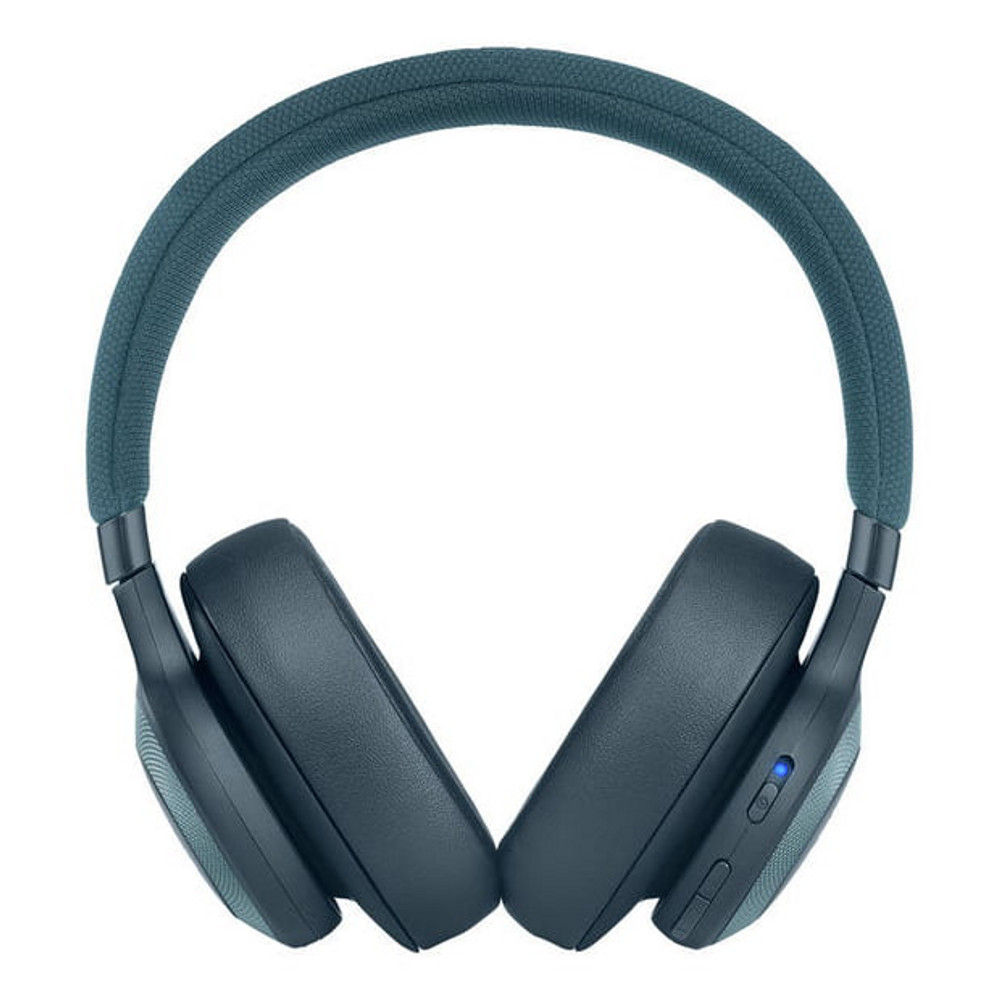
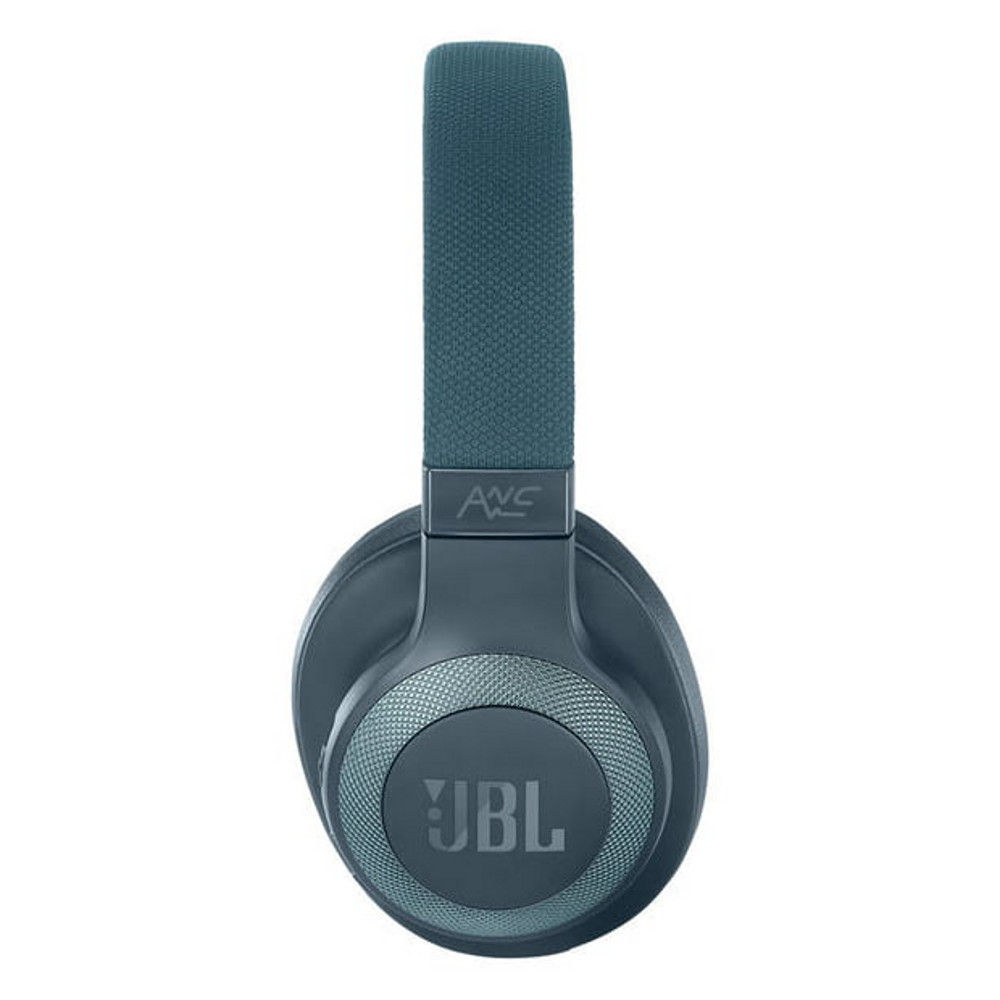
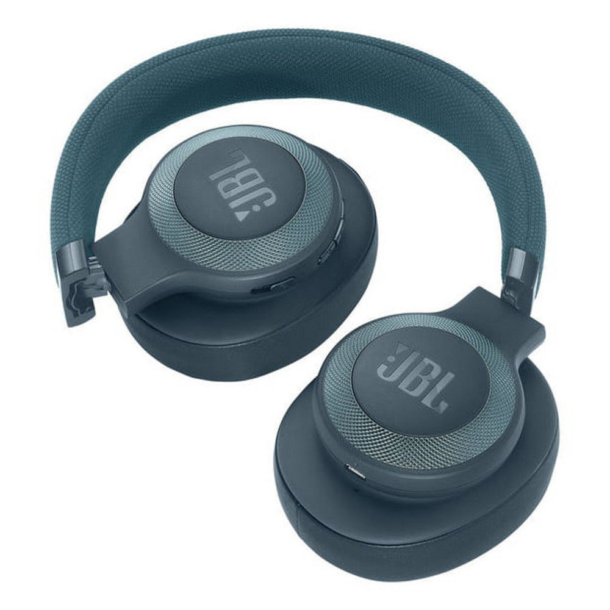
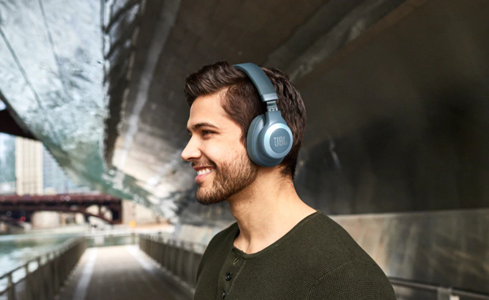

L'inform


JBL E65 BT Bleu
Réf JBL : JBLE65BTNCBLU
Casque nomade - Bluetooth - Circum-aural - Autonomie 24 heures - Micro intégré
Réf JBL : JBLE65BTNCBLU
Casque nomade - Bluetooth - Circum-aural - Autonomie 24 heures - Micro intégré



JBL E65 BT Noir
JBL
Garantie légale de conformité : 2 ans
 JBL E65 BT Noir
JBL E65 BT Noir
la signature audio JBL
Vous pouvez désormais profiter du son légendaire signé JBL, que l’on retrouve dans les théâtres, les salles de concert et les studios du monde entier, mais cette fois dans un casque que vous pourrez transporter partout.
Réduction active du bruit
La technologie de réduction active du bruit réduit le bruit ambiant pour vous offrir une isolation parfaite et ainsi une expérience sonore encore plus immersive.
Bluetooth
Profitez d'un son d'une clarté parfaite et d'une fonctionnalité kit mains-libres pratique.
Déconnectez-vous du monde et plongez-vous dans votre musique.
Le casque E65BTNC JBL combinedesign accrocheur et matériaux de qualité superieure pour vous faire profiter du son signé JBL, le tout accompagné d'une connectivité sans fil et de capacités supérieures de réduction de bruit active.Avec son arceau en tissu confortable et doux et des ecouteurs inclinés à mémoire de forme pour vous offrir des séances d'écoute plus longues, plus appréciables et immersives, le casque E65BTNC JBL dispose d'une technologie de réduction active du bruit aussi bien en mode filaire qu'en mode sans fil. il a également une autonomie de batterie de 24 heures en mode Bluetooth et il peut se recharger en seulement deux heures. Vous pouvez facilement faire plusieurs choses en même temps puisque le casque E65BTNC JBL vous permet d'alterner entre deux appareils en fluidité, ce qui vous assure de ne jamais manquer un appel pendant que vous profitez de votre playlist ou que vous regardez un film sur votre tablette par exemple. De plus, vous bénéficierez également d'un câble en tissu résistant et antinoeud détachable avec une télécommande/micro à touche unique, 3options de couleurs différentes et un format pliable à plat pour faciliter le transport
JBL
Garantie légale de conformité : 2 ans
JBL E65 BT Noirla signature audio JBL
Vous pouvez désormais profiter du son légendaire signé JBL, que l’on retrouve dans les théâtres, les salles de concert et les studios du monde entier, mais cette fois dans un casque que vous pourrez transporter partout.
Réduction active du bruit
La technologie de réduction active du bruit réduit le bruit ambiant pour vous offrir une isolation parfaite et ainsi une expérience sonore encore plus immersive.

Bluetooth
Profitez d'un son d'une clarté parfaite et d'une fonctionnalité kit mains-libres pratique.
Déconnectez-vous du monde et plongez-vous dans votre musique.
Le casque E65BTNC JBL combinedesign accrocheur et matériaux de qualité superieure pour vous faire profiter du son signé JBL, le tout accompagné d'une connectivité sans fil et de capacités supérieures de réduction de bruit active.Avec son arceau en tissu confortable et doux et des ecouteurs inclinés à mémoire de forme pour vous offrir des séances d'écoute plus longues, plus appréciables et immersives, le casque E65BTNC JBL dispose d'une technologie de réduction active du bruit aussi bien en mode filaire qu'en mode sans fil. il a également une autonomie de batterie de 24 heures en mode Bluetooth et il peut se recharger en seulement deux heures. Vous pouvez facilement faire plusieurs choses en même temps puisque le casque E65BTNC JBL vous permet d'alterner entre deux appareils en fluidité, ce qui vous assure de ne jamais manquer un appel pendant que vous profitez de votre playlist ou que vous regardez un film sur votre tablette par exemple. De plus, vous bénéficierez également d'un câble en tissu résistant et antinoeud détachable avec une télécommande/micro à touche unique, 3options de couleurs différentes et un format pliable à plat pour faciliter le transport
Caractéristique Techniques
| Type de casque |
Nomade Arceau Circum-aural Fermé |
|---|---|
| Connectivité | Bluetooth 4.1 |
| Réponse en fréquence | 20-20 000 Hz |
| Impédance | 32 Ohms |
| Sensibilité | 95dB |
| Niveau maximal de pression sonore | 108 dB |
| Réduction active du bruit | Oui |
| Microphone intégré | Oui |
| Pliable | Oui |
| Poids | 0.258 kilo |
| Livrée avec | Câble détachable, câble d'alimentation, carte d'avertissement, carte de garantie, fiche de sécurité, guide de démarrage rapide |